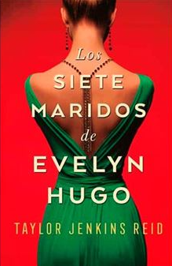
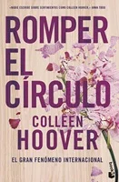
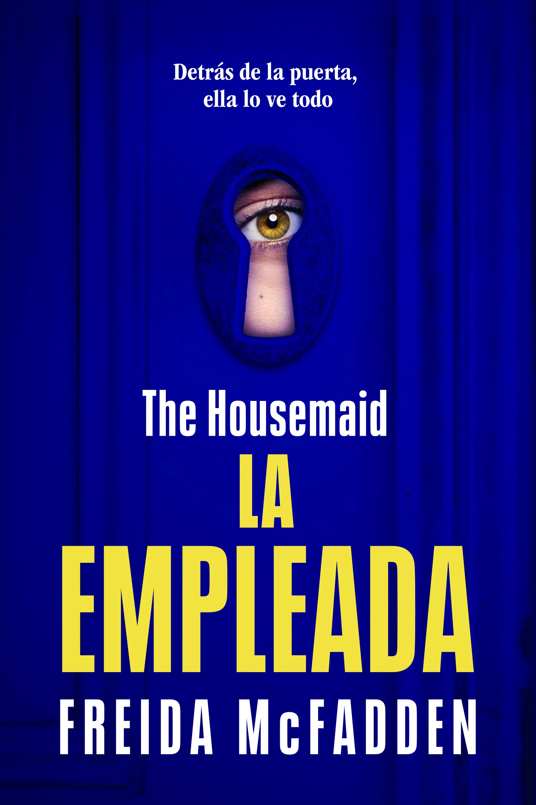
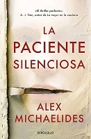

Bienvenidos a nuestro espacio dedicado a los apasionados de la lectura, donde cada libro recomendado
está cuidadosamente seleccionado para hacerte vibrar. Aquí encontrarás una cuidadosa selección de
novelas románticas que te emocionarán y thrillers que te mantendrán en suspense hasta la última
página. Si disfrutas de las historias intensas, los giros inesperados y los personajes inolvidables,
este es tu lugar ideal.
Explora autores fascinantes, descubre tramas que te envolverán desde el primer capítulo y sumérgete
en mundos donde el amor y el misterio se entrelazan. Además, para hacer tu experiencia aún más
sencilla, incluimos enlaces directos a las mejores tiendas para que puedas adquirir tus próximos
favoritos sin complicaciones. Déjate guiar por nuestras recomendaciones y prepárate para disfrutar
de una aventura literaria única. ¡Tu próxima gran lectura te espera!
Reseñas de los libros de amor
Los siete maridos de Evelyn Hugo

Evelyn Hugo, el icono de Hollywood que se ha recluido a su edad madura, por fin decide contar la
verdad sobre su
vida llena de glamour y de escándalos. Pero cuando para ello elige a Monique Grant, una periodista
desconocida,
nadie se sorprende más que la propia Monique. ¿Por qué ella? ¿Por qué ahora?
Monique no está precisamente en su mejor momento. Su marido la abandonó y su vida profesional no
avanza. Aun
ignorando por qué Evelyn la ha elegido para escribir su biografía, Monique está decidida a
aprovechar esa
oportunidad para dar impulso a su carrera.
Convocada en el lujoso apartamento de Evelyn, Monique escucha fascinada mientras la actriz le cuenta
su
historia. Desde su llegada a Los Ángeles en los años 50 hasta su decisión de abandonar su carrera en
el mundo
del espectáculo en los 80 -y, desde luego, los siete maridos que tuvo en ese tiempo-, Evelyn narra
una historia
de ambición implacable, amistad inesperada y un gran amor prohibido.
Monique empieza a sentir una conexión muy real con la legendaria actriz, pero cuando el relato de
Evelyn se
acerca a su fin, resulta evidente que su vida se cruza con la de Monique de un modo trágico e
irreversible.
Opinion personal: Este libro me pareció fascinante; una vez que comienzas, es imposible dejar
de leer. Su narrativa es cautivadora y te envuelve emocionalmente hasta la última página. Es una
obra conmovedora que, además, aborda con sensibilidad temas relevantes para la sociedad. Con una
magistral combinación del pasado y el presente, logra que conectes profundamente con la
protagonista, despertando una empatía genuina.
Puntos fuertes: Evolución del personaje principal a lo largo de la novela. La perspectiva
desde la que se cuenta la novela es diferente, explicada a través de una serie de entrevistas. La
novela aborda cuestiones como el amor, la identidad, la fama, la sexualidad, el sacrificio y el
feminismo en Hollywood, lo que la hace interesante y reflexiva. La historia está llena de giros
inesperados, que mantienen el interés hasta el final.
Puntos débiles: Aunque el giro final es impactante quizás algunos lectores pueden haber
anticipado el desenlace antes de que se revele, lo que puede restar algo de impacto a la sorpresa.
5 estrellas
Autora: Taylor Jenkins Reid
Fecha de publicación: 13 de junio de 2017
380 páginas
Romper el círculo

Lily Bloom se enamora de un neurocirujano tras mudarse a Boston con el objetivo de abrir su propio
negocio. Sin embargo, el primer amor de su vida retoma el contacto con ella, y Lily ahora no sabe
qué hacer.
Opinion personal: Este libro explora de manera profunda el amor y el abuso, invitando a
reflexionar sobre la toxicidad en las relaciones y a distinguir entre gestos de amor genuino,
posesión y abuso. Además, muestra cómo podemos quedar atrapados en ciclos de los que resulta difícil
escapar.
Puntos fuertes: La novela aborda temas como el abuso doméstico, las relaciones tóxicas y el
ciclo del abuso. La autora logra hacer que el lector se identifique y simpatice con los personajes,
lo que hace que la novela sea difícil de dejar. La historia tiene un mensaje positivo sobre la
capacidad de sanar, aprender a tomar decisiones saludables y romper ciclos de abuso. Esto inspira a
muchos lectores que atraviesan situaciones similares.
Puntos débiles: La resolución de ciertos conflictos al final de la novela puede ser vista como
forzada o demasiado idealista para algunos lectores.
5 estrellas
Autora: Collen Hoover
Fecha de publicación: 12 de junio de 2024
400 páginas
Libros de suspense
La asistenta

Todos los días friego la preciosa casa de los Winchester de arriba abajo. Recojo a su hija del
colegio y preparo deliciosas comidas para toda la familia antes de subir a cenar sola en mi
minúscula habitación del piso superior. Intento no prestar atención a Nina cuando lo ensucia todo
simplemente para ver cómo lo limpio. A las extrañas mentiras que cuenta sobre su propia hija. A su
marido, que cada día parece más abatido. Pero cuando miro a Andrew a los ojos, castaños,
encantadores y llenos de dolor, no me resulta difícil imaginar cómo sería vivir en la piel de Nina.
El gran vestidor, el coche de lujo, el esposo perfecto.
Hasta que un día no me resisto a probarme uno de sus maravillosos vestidos blancos. Solo quiero
saber qué se siente. Pero ella pronto lo descubre, y cuando me doy cuenta de que la puerta de mi
habitación solo se cierra por fuera ya es demasiado tarde. Algo me reconforta: los Winchester no
saben quién soy en realidad. No saben de lo que soy capaz...
Opinion personal:
Puntos fuertes:
Puntos débiles:
5 estrellas
Autora: Freida McFadden
Fecha de publicación: 5 de octubre de 2023
344 páginas
La paciente silenciosa

Solo ella sabe lo que sucedió. Solo yo puedo hacerla hablar. Alicia Berenson, una pintora de exito,
dispara cinco tiros en la cabeza de su marido, y no vuelve a hablar nunca más. Su negativa a emitir
palabra alguna convierte una tragedia domestica en un misterio que atrapa la imaginación de toda
Inglaterra. Theo Faber, un ambicioso psicoterapeuta forense obsesionado con el caso, está empeñado
en desentrañar el misterio de lo que ocurrió aquella noche fatal y consigue una plaza en The Grove,
la unidad de seguridad en el norte de Londres a la que Alicia fue enviada hace seis años y en la que
sigue obstinada en su silencio. Pronto descubre que el mutismo de la paciente está mucho más
enraizado de lo que pensaba. Pero, si al final hablara, ¿estaría dispuesto a escuchar la verdad?